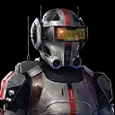
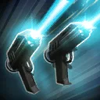
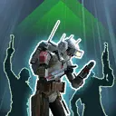
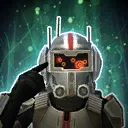

Tech
Stealthy support character that gives Translation to other Clone Troopers and applies Target Lock to enemies.

Stealthy support character that gives Translation to other Clone Troopers and applies Target Lock to enemies.

Deal Special damage to target enemy and inflict Target Lock for 2 turns on target enemy and the healthiest enemy that didn't already have it. If target enemy was already Target Locked, attack again.

Tech and target other Clone Trooper ally recover 40% of their Max Health, doubled if target ally is Bad Batch, gain Potency Up and Stealth for 2 turns, and Translation for 3 turns. If Tech was already Stealthed, all other Bad Batch allies also gain Translation for 3 turns.

Dispel all debuffs from Clone Trooper allies. All Bad Batch allies gain Foresight, Stealth, and Tenacity Up for 2 turns. Deal Special damage to all enemies and inflict Stun for 1 turn on enemies that are Dazed or Target Locked.
At the start of battle, Tech gains +1 Speed for each Clone Trooper ally, doubled for Bad Batch allies. If all allies are Clone Troopers, Tech gains Stealth for 1 turn. Tech has +25% Potency for each of his own stacks of Translation.
While Tech is active, Clone Trooper allies gain Translation for 3 turns (max 3 stacks) each time they use a Special ability. Translation cannot be copied. If the character already has Translation, the duration for all current stacks on that character resets to 3 turns. If all allies that can apply Translation are defeated, all stacks of Translation expire.
Translation : - Beneficial effects build based on the cumulative number of stacks:
1: Gain +30% Max Health
2: Gain +15% Critical Chance
3: If only one ally who grants Translation is present, decrease this character's cooldowns by 1 when that ally uses their Basic ability (limit once per turn)